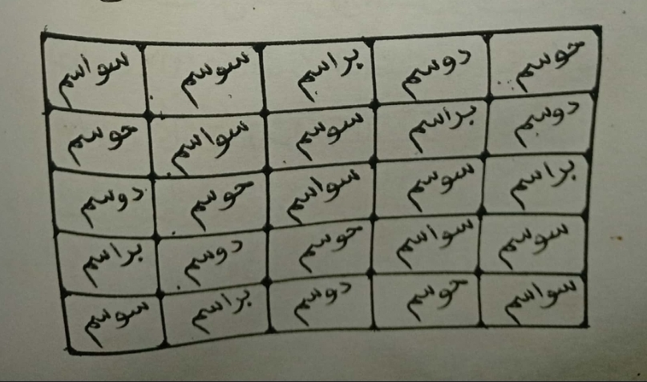

Wannan wani babban sirrine da muka kirashi da Sirrin Warware Jifa Sammu Da Asiri, yana daya daga cikin manyan sirrukan da manya manyan malamai ke aiki dashi domin warwarewa duk wani mai matsalar jifa, sammu, kambun baka, ruqya da sauran su.
Akwai sirruka da dama na warware sihiri amma wannan na daban ne yasha bambam da sauran sirrukan da kuka saba gani, akwai wayanda basu yarda da akwai asiri ba akwai kuma wayanda sun yarda da akwai asiri, tabbas asiri gaskiyane kuma baya kama mutum sai da izinin Allah saboda haka Ubangiji yace: Bai saukar da wata cuta ba sai da ya saukar da maganin ta.
Zaku iya samun litattafan mu na asararu pdf da muke fansar dasu a farashi mai sauki, inda Almajiri zai samu sirruka aciki mabanbanta 08109934185, ku tuntubemu a WhatsApp
Sirrin nan kai tsaye ya futo daga wasu gungun malamai da ake kiransu da ahlul sirri kuma suna daya daga cikin wayanda duk sirrukan da suka bayar mujarrabun ne babu kokonto akan su, mutane da yawa sun jarraba wannan sirrin kuma sun ga biyan bukata kuma muna fatan kuma idan kuka jarraba ku samu biyan bukata dan alfarmar annabi da alqurani.
Yadda ake aikin shine: Ana rubuta wannan hatimin na kasa kafa 14 sai a saka Hantiti aciki asha aikin ana yin shi ne na tsawon kwana 14, kuma kullum ake rubutawa kafa sha hudun kada a tsallake koda kwana daya ne.

Zaku iya samun litattafan mu na asararu pdf da muke fansar dasu a farashi mai sauki, inda Almajiri zai samu sirruka aciki mabanbanta 08109934185, ku tuntubemu a WhatsApp
Mawallafin Sirrin: Sunanshi Muawiya Muzzy daya daga cikin Almajiran Shehu Ibrahim inyass mabiyin darikar Shehu Ahmadu Tijjani, ya wallafa sirruka da dama a rayuwarshi, shine mamallakin shafin kundin sirri da Asararu Zallah, Zaku iya samunshi a WhatsApp 08109934185